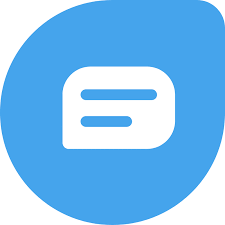
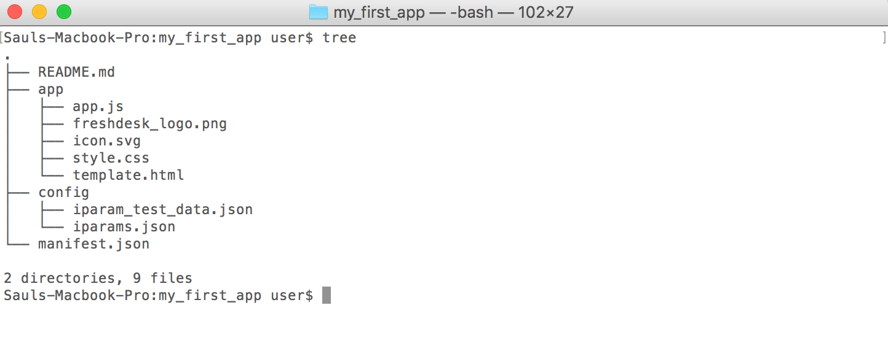
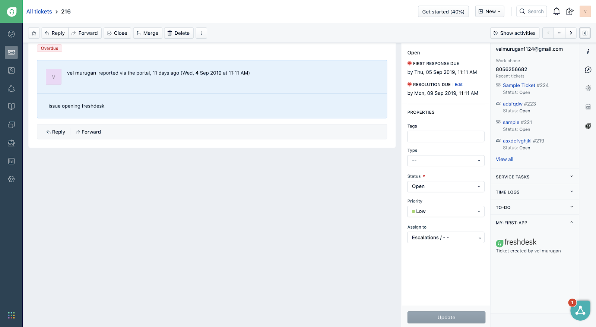

What is a Developer Platform?
As a multi-product SaaS company, Freshworks offers a platform to enable developers to customize their Freshworks products and integrate these products into their workflows. The platform provides gateways into the product through APIs, SDKs, webhooks, placeholders. Without this platform, customers would be unable to customize the experience of any Freshworks product to their tastes.
The Freshworks Developer Platform primarily enables developers to build apps that can run within the context of a Freshworks product, and thus tailor the product experience for users from both the front-end and the back-end.
Developers can build apps for the following Freshworks products
- Freshdesk
- Freshservice
-  Freshchat
- Freshcaller
- Freshsales
This course covers the Freshworks Developer Kit (FDK), and the basics of app development on the Freshworks platform.
The content is intended for developers with working knowledge of HTML, CSS, and JavaScript.
The Freshworks suite of products is feature-rich but apps are a necessity to bridge the gap between the niche requirements of customers and the built-in features of a product.
The platform supports both frontend apps and backend serverless apps.
What do I need to create an app?
To get started with a Freshworks app, the developer is expected to have working knowledge of the following,
- Freshworks app SDK (FDK)
- HTML
- CSS
- JavaScript
- Basic shell/UNIX commands
- An active account for the Freshworks product which the app is intended for
The Freshworks Developer Kit (FDK) is a command-line interface that helps developers build apps for the platform. The developer can perform the following actions with the FDK
- Create a Freshworks app
- Run an app in a simulated platform environment
- Validate the app using ESlint
- Pack or bundle the app
- Generate configuration files
Install FDK
FDK installation is supported on Mac, Linux, and Windows. Currently FDK requires NodeJS version 8. Verify if the requisite version of Nodejs is installed. If not, follow the steps from the developer documentation to install Node.js 8 using the Node version manager (NVM)
Navigate to the terminal on your laptop and run the following command to install the FDK:
npm install https://dl.freshdev.io/cli/fdk-5.2.1.tgz -g
To verify the installation, run the command fdk version.
App development for most products in the Freshworks suite is similar. This tutorial will showcase how to build an app for Freshdesk.
Before you get started with this tutorial, you will need an active Freshdesk account. If you don't have one, you can get one here
- Create a new directory to hold your new app, navigate to the directory in the terminal, and run the following command to create an app.
mkdir project && cd project - Run the following command to create an app
fdk create- The FDK displays prompts asking you to select a product and then a template.
- Select
freshdeskas the product andyour_first_appas the template (to create a front-end app).
? Choose a product: (Use arrow keys)
❯ freshdesk
freshservice
freshsales
freshchat
freshconnect
freshcaller - Choose your_first_app template to create a frontend app.
? Choose a template: (Use arrow keys)
❯ your_first_app
your_first_serverless_app
sample_crm_app Alternatively,
- You can use
fdk create --products freshdesk --template your_first_appto create the app directly
- The app is created and the directory contains the following files:

Files Explained
app.js | app.js is where the business logic of the app resides |
template.html | This file contains the HTML required for the app's UI which is rendered in an IFrame. |
iparams.json | This file contains all the installation parameters which you will have to specify/set when you install the app, like API keys |
iparam_test_data.json | This file contains the installation parameter values which you will specify to test the app on your machine. |
manifest.json | This file contains details about your app and its characteristics. |
manifest.json
manifest.json file is one of the important files in your app. It contains configuration data that defines the app. This includes,
- The Freshworks product for which the app is developed
- The
placeholderlocation where the app must load, - The HTML file that must be loaded inside the iframe
Sample manifest file of a Freshdesk app
{
"platform-version": "2.0",
"product": {
"freshdesk": {
"location": {
"ticket_sidebar": {
"url": "template.html",
"icon": "icon.svg"
}
}
}
}
}The app created from the ‘your_first_app' template in the previous section is very basic. As shown in the manifest file above, the app is setup to load in the ticket sidebar. The app can be run with the following steps,
- From your terminal, from within the app directory, Run fdk run
- Once the FDK starts serving the app, it will display a message noting that the app is being served on port 10001 on localhost.
- Login to your Freshdesk account in Chrome and navigate to a ticket
- In the address bar append "?dev=true" to the URL. For example, the modified URL should look like this: https://subdomain.freshdesk.com/helpdesk/tickets/1?dev=true.
- Once the ticket page loads, make sure "load unsafe scripts" is enabled for this page by clicking the shield icon on the top right corner of the address bar

Once the "Load unsafe scripts" button is selected, the page reloads and the app can be seen in the bottom right corner of the page

A Quick Introduction
The Freshworks App SDK is equipped with features that help the developer build powerful apps faster.
These features can be classified into basic and advanced features,
Basic features
Data API | Enable the app to fetch contextual data from the Freshworks product where it loads |
Events API | Enable the app to react to events that occur in the page where it loads. This includes button clicks, state changes, and updates to field values |
Interface API | Used to trigger user interface actions on the page. Using these APIs, an app can control the visibility of properties, hide or disable buttons, and show dialog boxes and notifications. |
Advanced Features
Data Storage | Enables the app to store data in the platform in JSON format, upto 8KB |
Request API | Enables CORS-compliant HTTPS requests |
Instance API | Enables the app to control its experience and communicate across multiple instances of the app loading in the same page |
OAuth | Enables integration with a service that supports OAuth for authorization |
We will learn about these features in the coming sessions! Kudos for creating your first app 🎈